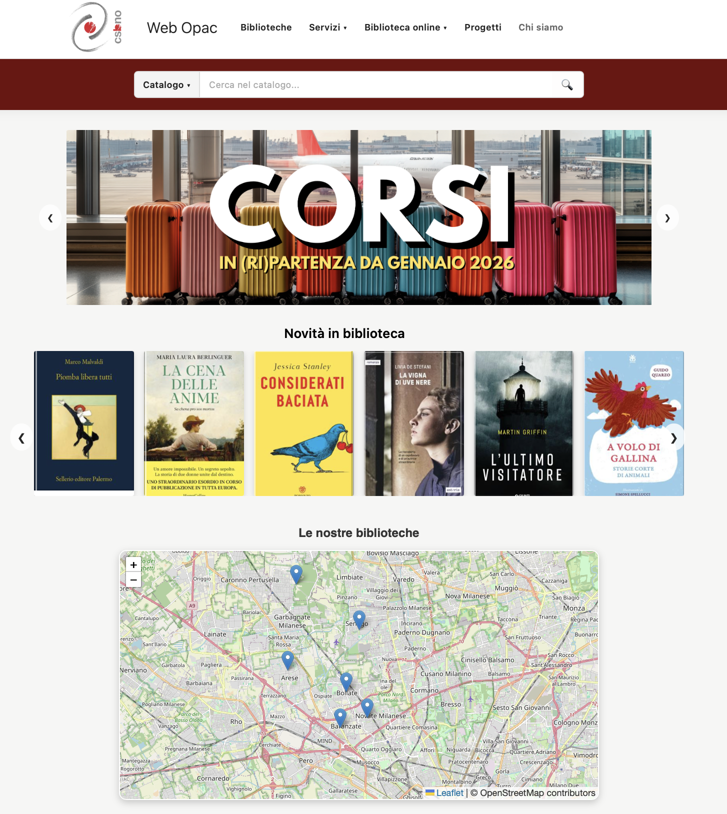
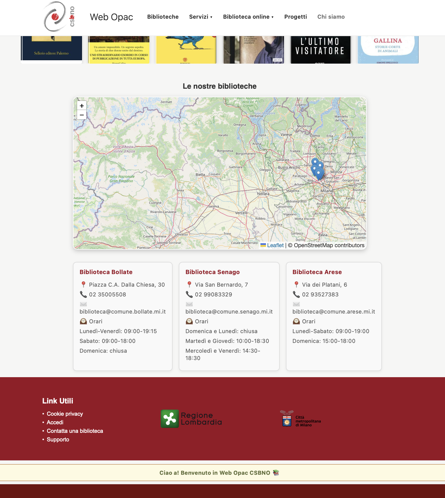

Recap: Refactoring the home page of CSBNO
By Angela Ciacera 7954IAMy page is about Web Opac of CSBNO libraries. CSBNO (Culture Socialità Biblioteche Network Operativo, formerly Consorzio Sistema Bibliotecario Nord Ovest) is a special consortium that coordinates over 60 libraries in 32 municipalities in the north-west of Milan.
At first in my home page you see the coockie that ask you to log in in your page. I think its useful for whom is searching a book and what to book it in a library, because its already logged in. Also who wants to look up for its own catalogue.

I linked also the real pages linked, the ones that for me are worth, especially the new ones like “Cose da fare nel CSBNO”.
I decided to maintain something from the old page like the event posters or the colours. The new page “Cose da fare” instead is too innovative and different from the old one. I think is missing a sort of continuity between them.

I think is more useful to look at it there. I also added three of contacts box info with timetable. Speaking about the map, I “stole” from their console on chrome the map with leaflet and added into a js.
Just under that we have the catalogue which is for me the important thing in the site. Then I decided to add a carousel with js, to collect all the event posters. They had also a carousel for the “Novità in biblioteca” that is good to have in the home page. Then the map and the footer.